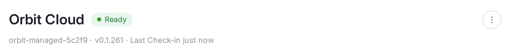
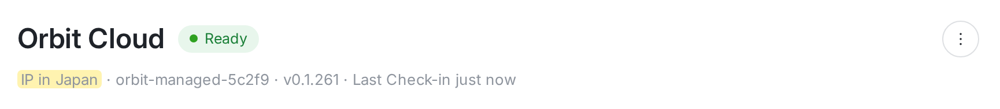

The real web page (fixture data). The country is the one Orbit's region check already reads from the machine's IP (runner.region); nothing new is stored.


| Machine state | Header line shows |
|---|---|
| Checked, Claude allowed | IP in Japan · host · version · check-in |
| Checked, Claude blocked | IP in Iran · … (the existing red note below stays as is) |
| Check went through a proxy | IP in Japan (via proxy): it's the proxy's country, not the machine's |
| Not checked yet / runner too old to check | Nothing: the line looks like today |
| Offline | The last country it reported (the check time is on hover) |
MachineSettingsPage.tsx (metaline), runnerCopy.ts (copy), a test next to MachineSettingsPage.layout.test.tsx.